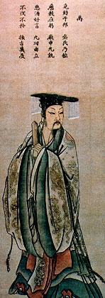

Yu - o Grande
Dinastias na história chinesa, ou dinastias chinesas, foram regimes monárquicos hereditários que governaram a China durante grande parte de sua história. Desde a inauguração do governo dinástico por Yu, o Grande, em cerca de 2070 aC, até a abdicação do imperador Xuantong em 12 de fevereiro de 1912, na esteira da Revolução Xinhai, a China foi governada por uma série de dinastias sucessivas. As dinastias da China não se limitaram às estabelecidas pela etnia Han - o grupo étnico chinês dominante - e sua antecessora, a confederação tribal Huaxia, mas também incluíram aquelas fundadas por povos não-Han. Dividir a história chinesa em períodos governados por dinastias é um método comum de periodização utilizado por estudiosos. Conseqüentemente, uma dinastia pode ser usada para delimitar a época em que uma família reinou, bem como para descrever eventos, tendências, personalidades, composições artísticas e artefatos daquele período. Por exemplo, uma porcelana feita durante a dinastia Ming pode ser referida como uma "porcelana Ming". A palavra "dinastia" geralmente é omitida ao fazer tais referências adjetivas. Governando por um período total de 789 anos, a dinastia que reinou mais tempo na China foi a dinastia Zhou, embora esteja dividida em Zhou Ocidental e Zhou Oriental na historiografia chinesa, e seu poder foi drasticamente reduzido durante a última parte de seu governo . A maior dinastia chinesa em termos de tamanho territorial foi a dinastia Yuan ou a dinastia Qing, dependendo da fonte histórica. As dinastias chinesas costumam se referir a si mesmas como "Tiāncháo" (天朝; "Dinastia Celestial" ou "Dinastia Celestial"). Como forma de respeito e subordinação, os estados tributários chineses referiam-se às dinastias chinesas como "Tiāncháo Shàngguó" (天朝 上 國; "Dinastia Celestial do Estado Elevado") ou "Tiāncháo Dàguó" (天朝 大 國; "Dinastia Celestial do Grande Estado ").